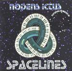

| Artist: | Nodens Ictus |
| Title: | Spacelines |
| Label: | Stretchy Records STRETCHYCD2 |
| Length(s): | 60 minutes |
| Year(s) of release: | 2000 |
| Month of review: | [02/2002] |
| 1) | The Grove Of Selves | 2.27 |
| 2) | Spacelines | 5.45 |
| 3) | The Gong Of Ra | 5.19 |
| 4) | Chickens In The Mist | 7.07 |
| 5) | Toad In The Whole | 1.47 |
| 6) | Sharpening The Norm | 9.08 |
| 7) | Way Of The Wind | 7.00 |
| 8) | Atavista | 5.50 |
| 9) | Aerial Procession | 3.50 |
| 10) | Sleeping Seas | 3.41 |
| 11) | Gopuram | 8.05 |
Chickens In The Mist could well have been written while watching Gorillas In The Mist and features a calm, warm and sensuous atmosphere with lots a strong jungle feel and nature sounds.
After the short and angelic Toad In The Whole, we come to the rather long Sharpening The Norm which ressembles the live side of Tangerine Dream in a good way. Later the music becomes more up-beat and we get in to a more psychedelic groove.
After an angelic opening, Way Of The Wind ressembles Gandalf on his album From Source To Sea (still one of my favourite electronic records). It is a soothing experience giving way to Atavista (missing an 'l' in there somewhere?) which can be compared to Chickens In The Mist.
A little bit of Chinese and noise we find on the rather complex sounding Aerial Procession, which has even some Kitaro sounds included.
Sleeping Seas has music dripping from the loudspeakers. The twosome has achieved a watery effect in their music here, as it percolates and reverberates. Later the music becomes more cosmic.
The closer Gopuram opens with painic tinkling. It continues in a friendly vein, and is what we might call psychedelic electronic music, but which can also be likened to early Vangelis.